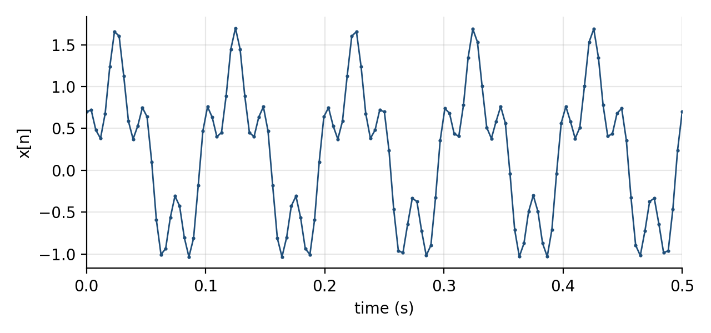
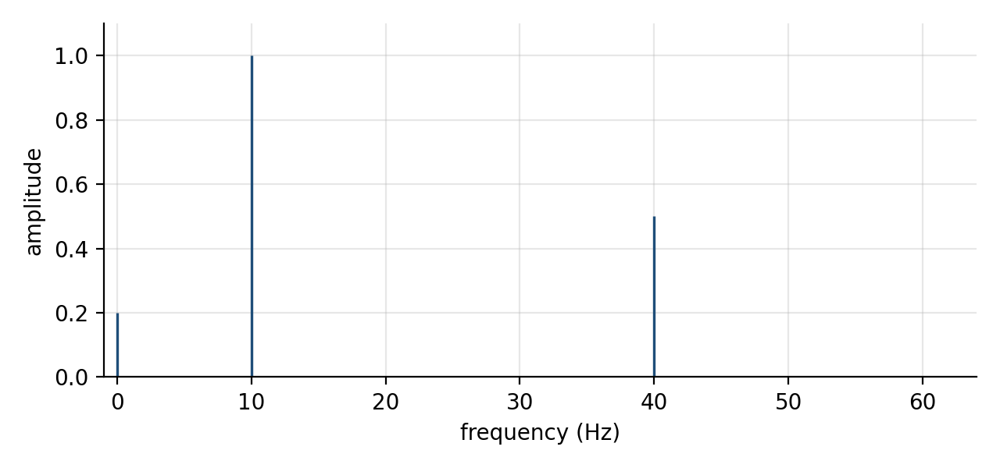
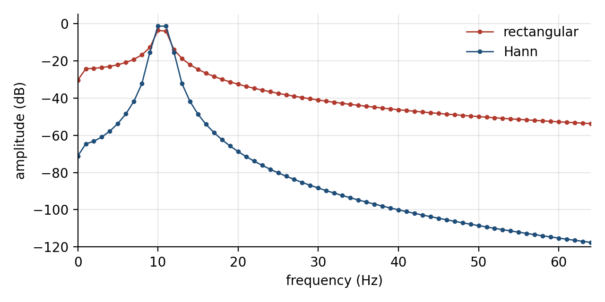

An object-oriented Fourier transform in C++
The Fourier transform answers a simple question: which frequencies does a function contain? On paper, the answer is an integral over all of time. In a program, you have a finite list of numbers, taken at a fixed rate, over a fixed interval. Every step between the integral and that list changes what you see in the result.
This guide builds a small C++ program that makes those steps explicit. You describe a function in a short text file. The program samples it, optionally tapers it, transforms it, and prints the strongest frequencies. Each of these steps is its own class. That is the point of the design: when you can change one step and keep the others fixed, the well-known surprises of the discrete transform stop being mysterious and become something you can switch on and off.
The complete program is about 800 lines of C++14 with no dependencies beyond the standard library. It uses classes, virtual functions, std::vector, std::complex and std::unique_ptr, and nothing more exotic.
From an integral to a sum
For a function of time x(t), the continuous Fourier transform is
X(f) = ∫ x(t) e−i2πft dt
A computer cannot integrate over all time, so we take N samples x[n] = x(n/fs) at a sample rate fs, and replace the integral with a sum. The result is the discrete Fourier transform (DFT) [1]:
X[k] = Σn=0N−1 x[n] e−i2πkn/N, k = 0, …, N−1
Each output value X[k] is called a bin. Bin k corresponds to the frequency k·fs/N, so the spacing between bins is fs/N, which is the inverse of the record length in seconds. One second of data gives bins 1 Hz apart, whatever the sample rate.
Two decisions hide in this translation. The sample rate limits the highest frequency you can represent: a sampled sinusoid is only unambiguous below half the sample rate, the Nyquist frequency [1, 2]. The record length limits how finely you can separate frequencies. Both decisions happen before any transform runs, which is why the program treats them as separate objects.
One class per step
We will implement a pipeline. Each arrow below is a hand-over between two classes, and each class has one job.
two-tones.sig > SignalLoader > Function > Signal::sample > SpectrumAnalyzer > SpectrumA Function knows how to evaluate f(t). A Signal holds samples and the rate they were taken at. A Window gives a weight for each sample. A FourierTransform turns a vector of complex numbers into another one. A Spectrum knows how to turn raw bins into frequencies and amplitudes. The SpectrumAnalyzer connects a window and a transform, and the SignalLoader reads the text format. We build them in that order.
Functions are objects
The first abstraction is the thing we want to analyse. A function of time needs only one operation, so the base class has a single pure virtual method:
class Function {
public:
virtual ~Function() {}
virtual double evaluate(double t) const = 0;
};
// A * sin(2*pi*(f*t + phase)). The phase is in cycles, so 0.25 is a quarter turn.
class Sine : public Function {
public:
Sine(double amplitude, double frequency, double phase)
: amplitude_(amplitude), frequency_(frequency), phase_(phase) {}
double evaluate(double t) const override {
return amplitude_ * std::sin(2.0 * kPi * (frequency_ * t + phase_));
}
private:
double amplitude_;
double frequency_;
double phase_;
};The library also has Gaussian (a pulse) and Constant (an offset). The interesting class is Sum, because the transform is linear: the spectrum of a sum is the sum of the spectra. A sum of functions is itself a function, so it derives from the same base class and owns its terms through std::unique_ptr:
class Sum : public Function {
public:
void add(std::unique_ptr<Function> term) { terms_.push_back(std::move(term)); }
bool empty() const { return terms_.empty(); }
double evaluate(double t) const override {
double total = 0.0;
for (size_t i = 0; i < terms_.size(); ++i) {
total += terms_[i]->evaluate(t);
}
return total;
}
private:
std::vector<std::unique_ptr<Function> > terms_;
};This is the composite pattern: callers cannot tell a single sine from a sum of twenty terms. Sampling then works on any function through the base class. Signal::sample evaluates the function at n/fs for n = 0 to N−1:
// Samples f on [0, duration) at the given rate.
static Signal sample(const Function& f, double sampleRate, double duration) {
const size_t count = static_cast<size_t>(std::lround(duration * sampleRate));
std::vector<double> values(count);
for (size_t n = 0; n < count; ++n) {
values[n] = f.evaluate(n / sampleRate);
}
return Signal(values, sampleRate);
}The interval is half-open on purpose. The DFT treats the record as one period of a repeating signal. For a signal that repeats exactly once per record, the sample at t = duration would be a copy of the sample at t = 0.
A small language for signals
Recompiling to try a new signal gets tedious quickly, so the program reads signals from .sig files. The format is line-based: one command per line, # starts a comment, and function parameters are key=value pairs. Here is the example we will analyse first:
# Two tones on top of a small DC offset, sampled for one second.
rate 256
duration 1.0
sine amplitude=1.0 frequency=10
sine amplitude=0.5 frequency=40 phase=0.25
constant value=0.2rate and duration set the sampling. Each function line adds one term to a Sum. The parameters have defaults where a sensible one exists (amplitude=1, phase=0) and are required where none does (frequency). The available functions are:
sine amplitude=A frequency=F phase=P # phase in cycles
gaussian amplitude=A center=T width=W # pulse centred at T seconds
constant value=CMeasured data does not come from a formula, so the language also accepts a samples block. The numbers can be spread over as many lines as you like, and the block ends with end:
# Eight samples typed in by hand: a square-ish wave at 2 Hz.
rate 8
samples
1 1 -1 -1
1 1 -1 -1
endA file uses either functions or a samples block. Mixing them would force the loader to guess the record length, and a loader that guesses is harder to trust than one that refuses.
The parser is a single loop over lines with an std::istringstream per line. The first word selects a command, and the rest of the line becomes a map of parameters. Each command then takes the values it knows:
} else if (command == "sine") {
Params p = readParams(words, line);
allowOnly(p, "amplitude frequency phase", command, line);
const double amplitude = take(p, "amplitude", 1.0);
const double frequency = require(p, "frequency", command, line);
const double phase = take(p, "phase", 0.0);
if (frequency > highestFrequency) {
highestFrequency = frequency;
highestLine = line;
}
sum.add(std::unique_ptr<Function>(new Sine(amplitude, frequency, phase)));Most of the loader is error handling, and that is deliberate. A typo in a signal file should stop the program with the line number, not produce a spectrum of the wrong signal. The allowOnly check catches misspelled keys before the missing-key check runs, so the message names the real problem:
$ ./fourier examples/typo.sig
fourier: line 3: unknown parameter 'freq' for 'sine' (expected: amplitude frequency phase)The loader also enforces the sampling limit from the first section. A sine at or above half the sample rate cannot be represented by the samples, and would appear in the spectrum at a different, wrong frequency [2]. Because the loader knows both the rate and every frequency in the file, it is the right place to refuse:
$ ./fourier examples/alias.sig
fourier: line 3: sine at 70 Hz needs a rate above 140 (rate is 100)The transform behind an interface
With a signal in hand, we need the transform itself. We will write two implementations, so the rest of the program must not depend on either. The base class describes what every transform provides:
class FourierTransform {
public:
virtual ~FourierTransform() {}
virtual std::vector<Complex> forward(const std::vector<Complex>& x) const = 0;
// Some algorithms only work for some lengths. Callers ask first.
virtual bool supports(size_t length) const { return length > 0; }
virtual std::string name() const = 0;
// x[n] = (1/N) sum_k X[k] * exp(+2*pi*i*k*n/N), built from forward().
std::vector<Complex> inverse(const std::vector<Complex>& X) const;
};The supports method looks odd at this point. It will matter once the fast algorithm arrives, so keep it in mind.
The first implementation evaluates the definition directly: two nested loops, one over output bins and one over input samples.
std::vector<Complex> NaiveDFT::forward(const std::vector<Complex>& x) const {
const size_t N = x.size();
std::vector<Complex> X(N);
for (size_t k = 0; k < N; ++k) {
Complex sum(0.0, 0.0);
for (size_t n = 0; n < N; ++n) {
// exp(-2*pi*i*k*n/N) repeats every N steps of k*n, so reduce
// the product first. This keeps the angle small and accurate.
const size_t turn = (k * n) % N;
const double angle = -2.0 * kPi * turn / N;
sum += x[n] * std::polar(1.0, angle);
}
X[k] = sum;
}
return X;
}The only detail beyond the formula is the modulo. The exponential depends on kn only through kn mod N. Reducing the integer product first means std::sin and std::cos always receive an angle between −2π and 0, instead of an angle that grows to thousands of radians for large N, where each call loses precision.
The inverse transform needs no second implementation. Conjugating the exponent turns the inverse into the forward transform, so x[n] = conj(DFT(conj(X)))[n] / N. The base class implements that identity once, and every derived class inherits a correct inverse:
std::vector<Complex> FourierTransform::inverse(const std::vector<Complex>& X) const {
// Conjugate, transform forward, conjugate again, divide by N.
std::vector<Complex> conjugated(X.size());
for (size_t k = 0; k < X.size(); ++k) {
conjugated[k] = std::conj(X[k]);
}
std::vector<Complex> x = forward(conjugated);
const double scale = 1.0 / X.size();
for (size_t n = 0; n < x.size(); ++n) {
x[n] = std::conj(x[n]) * scale;
}
return x;
}Reading a spectrum
The raw output of forward is a vector of complex numbers, and it is not yet a readable answer. For a real signal of length N, a sine of amplitude A that falls exactly on bin k produces |X[k]| = AN/2, and an identical mirror image in bin N−k. To report the amplitude we fold the mirror back and divide by N. That bookkeeping belongs in its own class:
// Peak amplitude of a real sinusoid that sits exactly on bin k.
double amplitude(size_t k) const {
const size_t N = bins_.size();
const double sides = (k == 0 || 2 * k == N) ? 1.0 : 2.0;
return sides * std::abs(bins_[k]) / (N * coherentGain_);
}Bin 0 (the mean) and bin N/2 (the Nyquist frequency) have no mirror, so they are not doubled. The coherentGain_ term is 1 for now; it becomes important in the next section.
The SpectrumAnalyzer joins the pieces. It borrows a transform and a window, multiplies the samples by the window weights, runs the transform, and returns a Spectrum. The main function chooses the concrete classes from command-line flags. It is the only code that names NaiveDFT or HannWindow directly.
Running the two-tone file gives exactly the three components we wrote into it:
$ ./fourier examples/two-tones.sig --out out/two-tones
256 samples at 256 Hz, radix2-fft, rectangular window, bin width 1 Hz
frequency amplitude
10.000 1.0000
40.000 0.5000
0.000 0.2000

The rest of the spectrum is not approximately zero, it is at rounding level: the largest amplitude outside those three bins is 1.2 × 10−15. That clean result depends on one fact about this example. Both tones complete a whole number of cycles in one second, so each lands exactly on a bin.
The hand-typed samples file gives a smaller surprise. It reports one peak at 2 Hz with amplitude 1.4142. With only four samples per period, the sequence 1, 1, −1, −1 is exactly √2·sin(2πn/4 + π/4). Four samples cannot tell this "square wave" apart from a sine, so the transform reports a sine. The samples, not the formula you had in mind, define the signal.
When a tone falls between bins
Real signals do not arrange their frequencies to fit your record length. Change one number in the file, from 10 Hz to 10.5 Hz, and the clean picture falls apart:
$ ./fourier examples/off-bin.sig
256 samples at 256 Hz, radix2-fft, rectangular window, bin width 1 Hz
frequency amplitude
10.000 0.6518A tone of amplitude 1 now reads as 0.65, and its energy has spread over every bin in the spectrum. The cause is the periodic assumption from the sampling section. The DFT treats the record as one period of a repeating signal. 10.5 cycles do not repeat cleanly, so the implied signal has a jump where the end of the record meets its start. That jump contains energy at all frequencies. This effect is called spectral leakage [3].
The standard remedy is a window: a taper that brings the record smoothly to zero at both ends, so that no jump remains. The program already applies a window, the rectangular one, whose weights are all 1. A Hann window uses 0.5 − 0.5 cos(2πn/N). We use the periodic form, divided by N rather than N−1, which Harris recommends for DFT analysis because it keeps the window consistent with the periodic assumption [3]:
// Periodic ("DFT-even") Hann window: 0.5 - 0.5 cos(2*pi*n/N).
class HannWindow : public Window {
public:
double weight(size_t n, size_t length) const override {
return 0.5 - 0.5 * std::cos(2.0 * kPi * n / length);
}
std::string name() const override { return "hann"; }
};A window also scales the signal down: the average Hann weight is 0.5. The analyzer records that average as the coherent gain and Spectrum::amplitude divides by it, so amplitudes stay in the units of the input. With that correction in place, switching windows is one flag:
$ ./fourier examples/off-bin.sig --window hann
256 samples at 256 Hz, radix2-fft, hann window, bin width 1 Hz
frequency amplitude
11.000 0.8489
The figure shows the trade. Far from the tone, the Hann spectrum drops much faster: at 30 Hz the rectangular window reports 0.0088 and the Hann window 0.000038, more than 200 times less. Near the tone, the Hann peak is wider, spread over more bins.
The peak values are a useful check against the literature. For a tone exactly halfway between two bins, Harris lists the worst-case amplitude loss ("scalloping loss") as 3.92 dB for the rectangular window and 1.42 dB for Hann [3]. Those correspond to amplitude factors of 0.637 and 0.849. The Hann result, 0.8489, matches. The rectangular bins read 0.652 and 0.622 rather than 0.637 each. Their average is 0.637, and the difference between them comes from the mirror image at −10.5 Hz, which leaks into the positive bins because the tone sits close to 0 Hz. Harris's figure describes the window alone and does not include that interaction.
None of this required a change to the transform, the loader or the spectrum class. The window was a separate object from the start, so the experiment cost one flag.
A faster transform with the same contract
The naive DFT performs N2 complex multiplications. That is acceptable for 256 samples and becomes a problem for large records. The fast Fourier transform (FFT) reduces the cost to the order of N log N. Cooley and Tukey published the algorithm in 1965 [4], although Heideman, Johnson and Burrus later traced the same idea to unpublished work by Gauss from around 1805 [5].
The radix-2 version rests on one observation. If N is even, split the samples into those with even and odd indices. Each half is a signal of length N/2 with its own DFT, E and O. The full transform follows from the two halves:
X[k] = E[k] + e−i2πk/NO[k], X[k+N/2] = E[k] − e−i2πk/NO[k]
Apply the same split to each half, and again, until the pieces have length 1. The recursive form maps line by line onto that description:
void fftInPlace(std::vector<Complex>& a) {
const size_t N = a.size();
if (N == 1) {
return;
}
// Split into even- and odd-indexed samples and transform each half.
std::vector<Complex> even(N / 2);
std::vector<Complex> odd(N / 2);
for (size_t i = 0; i < N / 2; ++i) {
even[i] = a[2 * i];
odd[i] = a[2 * i + 1];
}
fftInPlace(even);
fftInPlace(odd);
// Combine: X[k] = E[k] + w^k O[k], X[k + N/2] = E[k] - w^k O[k].
for (size_t k = 0; k < N / 2; ++k) {
const Complex twiddle = std::polar(1.0, -2.0 * kPi * k / N) * odd[k];
a[k] = even[k] + twiddle;
a[k + N / 2] = even[k] - twiddle;
}
}The split only works if every level has an even length, so N must be a power of two. This is where supports earns its place. Without it, RadixTwoFFT would accept fewer inputs than its base class promises, and code written against FourierTransform would break when handed the fast version. Liskov and Wing describe exactly this: a subtype must not strengthen the preconditions of the type it replaces [6]. Putting the length question into the base class makes the restriction part of the contract. Every caller can ask before calling, and main uses the answer to pick an algorithm:
// The only place in the program that knows the concrete transform classes.
std::unique_ptr<FourierTransform> makeTransform(const std::string& name, size_t length) {
std::unique_ptr<FourierTransform> fft(new RadixTwoFFT());
if (name == "fft" || (name == "auto" && fft->supports(length))) {
return fft;
}
if (name == "dft" || name == "auto") {
return std::unique_ptr<FourierTransform>(new NaiveDFT());
}
throw std::runtime_error("unknown transform '" + name + "'");
}With the default auto, a 12-sample file quietly uses the naive DFT. If you force the FFT, the analyzer refuses instead of returning a wrong answer:
$ ./fourier examples/twelve.sig --transform fft
fourier: radix2-fft cannot transform 12 samplesTwo implementations of the same interface also give us a test for free: they must agree. The check program transforms random complex vectors with both, and runs the inverse on the FFT output:
$ ./check
N max |DFT - FFT| max |x - inv(fwd(x))|
8 9.037e-16 2.289e-16
32 3.202e-15 3.511e-16
128 1.300e-14 5.979e-16
512 5.684e-14 7.772e-16
2048 2.508e-13 1.132e-15
all checks passedThe disagreement grows with N but stays at rounding level. The FFT round trip returns the input to within about 10−15, which confirms the conjugation trick in the base class. The benchmark program times one forward transform of each kind:
| N | naive-dft (ms) | radix2-fft (ms) |
|---|---|---|
| 256 | 1.204 | 0.017 |
| 512 | 4.176 | 0.035 |
| 1024 | 16.432 | 0.076 |
| 2048 | 64.911 | 0.166 |
| 4096 | 258.901 | 0.373 |
These times come from a Linux container with g++ 13.3 at -O2, so the absolute values will differ on your machine. The shape will not. Each doubling of N multiplies the naive time by about four and the FFT time by a little over two. At 4096 samples the FFT is roughly 700 times faster, and nothing outside transform.cpp changed to get it.
Where this design stops
This program is a teaching tool, and its limits are easy to name. The FFT only handles powers of two. The recursion allocates two new vectors at every level. Real input produces a mirrored spectrum, and the code computes both halves anyway. A production library fixes all three. FFTW, for example, supports arbitrary lengths, works in place, and has dedicated transforms for real data [7].
FFTW also makes the same design decision as this guide, at a much larger scale. Before transforming, it builds a plan: it tries several algorithms for the given length on the current machine and keeps the fastest [7]. Our makeTransform function asks one question, supports(length), and picks between two classes. The principle is identical. Callers depend on the contract, the choice of algorithm happens in one place, and that choice can change without touching anything that uses the result.
That separation is also what made the experiments in this guide cheap. Aliasing was caught by the loader, leakage was fixed by swapping one window object, and the FFT was verified by comparing it with the class it replaced. Each surprise of the discrete transform lives in one step of the pipeline, and when each step is its own object, you can find it there.
The full source, the example .sig files and the script that draws the figures are in the accompanying project. Build it with make and start by changing a frequency in examples/two-tones.sig.
References
- Oppenheim, Alan V.; Schafer, Ronald W. (2010). Discrete-Time Signal Processing, 3rd edition. Pearson. Chapters 4 (sampling) and 8 (the discrete Fourier transform).
- Shannon, Claude E. (1949). “Communication in the Presence of Noise.” Proceedings of the IRE, 37(1), 10–21.
- Harris, Fredric J. (1978). “On the Use of Windows for Harmonic Analysis with the Discrete Fourier Transform.” Proceedings of the IEEE, 66(1), 51–83.
- Cooley, James W.; Tukey, John W. (1965). “An Algorithm for the Machine Calculation of Complex Fourier Series.” Mathematics of Computation, 19(90), 297–301.
- Heideman, Michael T.; Johnson, Don H.; Burrus, C. Sidney (1984). “Gauss and the History of the Fast Fourier Transform.” IEEE ASSP Magazine, 1(4), 14–21.
- Liskov, Barbara H.; Wing, Jeannette M. (1994). “A Behavioral Notion of Subtyping.” ACM Transactions on Programming Languages and Systems, 16(6), 1811–1841.
- Frigo, Matteo; Johnson, Steven G. (2005). “The Design and Implementation of FFTW3.” Proceedings of the IEEE, 93(2), 216–231.